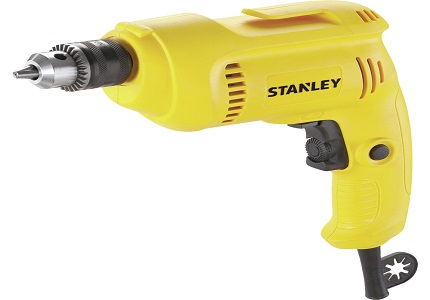

TALADROS
Taladro ION Litio sin Carbones 20V Max 1.5 AH
Caracteristicas y Beneficios
adsMotor de 520W
Velocidad Variable Reversible
Interruptor con Bloqueo para uso Continuo
Acepta Puntadas con Base Hexagonal de 6,35mm (1/4”)
Dispositivo de Ajuste de Profundidad
PRECIO: 200 Bs.
Taladro de Banco
Caracteristicas y Beneficios
Potente motor de inducción de 1/3HP (250W)
5 velocidades mecánicas y escala de profundidad
Mandril de 1/2"
(13mm)
Mesa y base de acero fundido
PRECIO: 1000 Bs.

Taladro de Rotacion 550W 10MM
Caracteristicas y Beneficios
Poderoso motor de 550W para mayor eficiencia y durabilidad
Motor de alto desempeño, entrega 0-2800 RPM para completar el trabajo más rápido
Diseño compacto y ergonómico para mayor control
PRECIO: 200 Bs.
Taladro Percutor 13mm 20V Brushless + 2 Baterias y Maletas
Caracteristicas y Beneficios
Mandril de 13 MM, Sin llave para un cambio de broca rápido y fácill
16 Posiciones de Torque
Mango ergonomico mayor comodidad en las aplicaciones más exigentes
Interruptor con modulo electronico control de velocidad variable y protección contra sobrecargas (1/4”)
2 MODOS: ATORNILLADOR Y MARTILLO PERCUTOR 32,300 IPM
PRECIO: 700 Bs.
Atornillador para Driwall
Caracteristicas y Beneficios
Motor de 520W
Velocidad Variable Reversible
Interruptor con Bloqueo para uso Continuo
Acepta Puntadas con Base Hexagonal de 6,35mm (1/4”)
Dispositivo de Ajuste de Profundidad
PRECIO: 400 Bs.